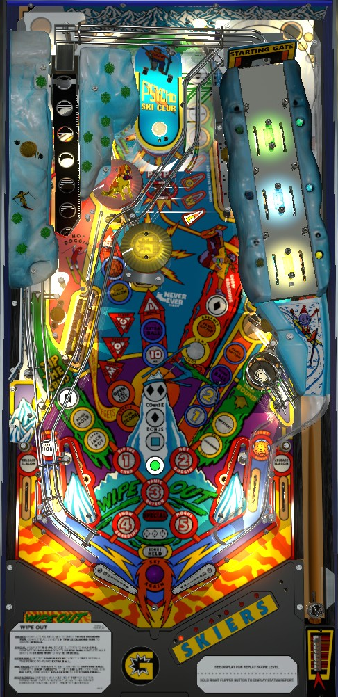

Always play toward multiball or Rounds (modes). Modes are started at the right saucer when no mode or multiball is running; the most important mode is Hot Doggin' (#2), which doubles your score if you complete the drop targets and the standups behind them. Complete the drop targets to light the Ski Lift center shot for locks; lock 2 balls then shoot the lower right saucer to start multiball; in multiball, shoot the Ski Lift to try to collect more lit Slalom lanes, and when you complete the Slalom lanes, shoot Rip the Crud in the lower left for a super jackpot.
The below picture of Wipe Out's playfield was taken from the VPX recreation by Edizzle, Kiwi, et al.

All plunges on Wipe Out feed the left flipper. For the skill shot, immediately shoot the Ski Lift center lane, which will lock a ball for multiball even if the Ski Lift was not otherwise lit.
If the Ski Lift is open, a light will be flashing on the back panel of the game near the words To Ski Lift, and a shot up to the middle will be directed to the elevator mechanism in the back left of the game. If the Ski Lift is not open, a shot up the middle will make a u-turn and be directed downward into the pop bumpers. To open the Ski Lift when it is closed, complete the 4-bank of drop targets on the left. Shots to the Ski Life when it is open function as locks for multiball. When 2 balls are locked, the Ski Lift will close and cannot be reopened, so shoot the lower right saucer to start Avalanche Multiball.
At the start of multiball, the third locked ball is kicked out of the lower right saucer, and then the first and second locked balls are ejected down the Slalom in the back right of the game. The Slalom tilts back and forth on its own. If a ball rolls through a lit Slalom lane, it unlights that lane and scores a Jackpot, which is always worth 5,000,000 points. Unlighting all Slalom lanes causes the Ski Lift to close and lights a Super Jackpot at the Rip the Crud shot in the lower left. The Super Jackpot scores 100,000,000 points multiplied by the number of times the Slalom lit lanes have been completed during the current ball in play (not just during the current multiball). To reopen the Ski Lift after collecting a Super Jackpot, complete the 4-bank of drop targets. When the Slalom lanes are completed, the Slalom lanes required for the next Super Jackpot are instantly relit, so a ball that qualifies one Super Jackpot may be able to make progress toward the next Super Jackpot right away.
The only other scoring feature available in multiball is that the center standup target always scores 10,000,000 points per hit when multiple balls are in play.
The Slalom mini-game is played outside of multiball when one or two balls are locked at the Ski Lift. There are two ways to start the Slalom mini-game.
During the Slalom mini-game, one lane in each pair is lit. Use the flippers to tilt the Slalom in one direction or the other, with the goal of having the ball go through lit lanes. Scoring for the Slalom mini-game is 0, 20,000,000, 35,000,000, or 50,000,000 points depending on whether 0, 1, 2, or 3 lit lanes were made respectively.
When no mode or multiball is running, shoot the lower right saucer to start the currently flashing numbered mode, referred to as Rounds by the game. Which mode is flashing changes each time a slingshot is hit. All modes are timed single-ball rounds. There is no way to pause or extend the timer in any mode. In the order they are numbered, the modes are:
After all 5 modes have been played (in any order, and they do not need to be completed), the next mode started at the saucer is Triple Diamond Run, which is the closest thing Wipe Out has to a conventional wizard mode. Triple Diamond Run is a single-ball, 15 second mode where you need to shoot Rip the Crud, the Snow Board ramp, and the Ski Lift once each. Doing so within the time limit awards an instant Special. As soon as time runs out or the Special is scored, play resumes, with all mode progress reset so that you can play the 5 main modes (and potentially work toward another Triple Diamond Run) again. In competition/novelty play, Special scores 50,000,000 points.
A Skiers letter can be earned in three ways:
Completing SKIERS instantly starts Skiers Run, a carryover wizard mode. Skiers Run works similarly to Triple Diamond Run. In Skiers Run, five shots are lit: Rip the Crud flip ramp, the U standup target, the Ski Lift, the Snow Board ramp, and the mode start saucer. Make any shot to score 20,000,000 points and unlight it. Making all 5 shots within 30 seconds scores an instant Special, which is again worth 50,000,000 points in competition/novelty play.
By default, SKIERS letters are a carryover award persisting across balls, players, and games. If Wipe Out is set to tournament mode, SKIERS letters will be reset to SKI at the start of each ball for each player.
When no mode or multiball is running, the mode start saucer gives a Mystery award. If the game is set to tournament mode, the Mystery award will always be 10,000,000 points. In casual play, though, it can be any of the following:
This list may not be exhaustive.
The lower right saucer can be lit for both Mystery and Start Round at the same time, but it cannot be lit for both Mystery and Multiball at the same time (Multiball overrides the Mystery).
When no mode or multiball is running, shoot the unlit Panic Button target to light the number 1. Shoot it again within 7 seconds to light the number 2, shoot it within 7 seconds of lighting the 2 to light extra ball, and shoot it within 7 seconds of lighting the extra ball to earn the extra ball. The time limit for each stage of this feature can be set to 5 or 10 seconds instead of 7. Also, game settings determine whether any part of the target can be used to advance toward the extra ball, or only the "inner" target near the center of the standup. In competition/novelty play, extra balls score 20,000,000 points.
When no mode or multiball is running, the Snow Board ramp scores a Pump Shot. Pump Shot's value starts at 1,000,000 points. Consecutive shots to the Snow Board ramp without missing increase the Pump Shot value to 3,000,000, then 5,000,000, then 10,000,000, then 20,000,000. Hitting a switch that is not part of the ramp or the left in lane breaks the chain and resets the Pump Shot to 1,000,000. If a 20,000,000-point Pump Shot is scored, all Pump Shots score 3,000,000 for the rest of the ball and cannot be increased.
The Dog Bonus starts at 3,000,000 points. Any pop bumpers hit when no mode or multiball is running add 3,000,000 to the Dog Bonus. To score the Dog Bonus, make the right in lane, then shoot the U target within a few seconds. Scoring the Dog Bonus resets it back to 3,000,000. The Dog Bonus maxes out at 765,000,000 points (255 pop bumpers). Despite being called a bonus, the Dog Bonus is not scored at the end of the ball.
Wipe Out has a conventional in/out lane setup. Slingshots score 90 points, alternate which mode is flashing to be started next, and alternate which out lane is lit for Release Slalom. The left in lane lights Hold Bonus at Rip the Crud for a few seconds. The right in lane lights the U standup target for Collect Dog Bonus for a few seconds. Out lanes can be lit alternately for Release Slalom, a last chance-style extended play feature, when at least one ball is locked.
The only end of ball bonus on Wipe Out is the Course Bonus. Course Bonus starts at the green circle ('beginner') and is worth 5,000,000 points. Each time you collect the 3 Diamonds around the game (at Rip the Crud, Ski Lift, and Snow Board ramp), the Course Bonus advances one level: first to a blue square ('intermediate') worth 15,000,000 points, then to a black diamond ('expert') worth 30,000,000 points, then to a double black diamond ('experts only') worth 50,000,000 points. You can continue to collect diamonds to advance the course, but it will have no effect once you reach double black diamond level. There is no way to multiply the course bonus or collect it mid-ball. The Course Bonus is reset at the start of each ball unless Hold Bonus was earned, which is achieved by first making the left in lane, then shooting Rip the Crud within about 15 seconds.
In competition/novelty play, extra balls score 20,000,000 points and specials score 50,000,000 points.
In tournament mode: the SKIERS carryover is reset to SKI at the start of each ball for each player, the Mystery is set to always give 10,000,000 points, the out lane Release Slalom feature is disabled, and any locked balls are released for each player after each ball.
Wipe Out has a "low scoring mode", similar to several other Premier Gottlieb games from around this time. Notable changes include cutting Slalom mini-game scoring in half, doubling the speed at which the Rip the Crud round's hurry-up counts down, halving the Mogul completion bonus, and lowering the Dog Bonus from 3,000,000 per bumper to 1,000,000. The game manual does not indicate that low scoring mode has any impact on the value of a Super Jackpot or the double-score feature from Hot Doggin', so major strategy should not be changed if the game is in low scoring mode.
The Super Jackpot value can be set to 50,000,000 instead of 100,000,000. This is separate from the low scoring mode previously described.
The Snow Board ramp can advance the Panic Button value by 5,000,000 or 1,000,000 at a time instead of 3,000,000.
Hurry-up Extra Ball can last 15 or 7 seconds instead of 10.
At the end of the game, a letter in SKIERS is automatically given unless there are at least 3 letters lit. This threshold can be changed to 5 (SKIER) or 0 (never give a letter at the end of the game) instead.
The mode start saucer has a hard setting. If enabled, the saucer will "toggle itself on and off when not in a round". I have not been able to confirm if this toggle is based on time, slingshot hits, simply needing to shoot the saucer twice to start each mode, or something else.
| If you need... | Try... |
| 10,000,000 points | ...starting any Round main mode, or starting Multiball. |
| 30,000,000 points | ...playing any Round main mode with the intent to complete it, looping the Snow Boarding ramp to score Pump Shot a few times, or starting Multiball and taking a couple shots at the 10,000,000 target in the center. |
| 100,000,000 points | ...playing for a Super Jackpot during Multiball, completing the Mogul round, or starting and playing a couple of Slalom mini-games. |
| 300,000,000 points or more, and you do not have a relatively high score already | ...focusing exclusively on Multiball and trying to earn as many Super Jackpots as you can during a single ball in play. |
| 300,000,000 points or more, and you do have a relatively high score already | ...starting and completing the Hot Doggin' mode (round #2) to double your score and gain ground quickly. If you do not complete Hot Doggin', pivot to a multiball Super Jackpot strategy or play through all the modes to get another try at Hot Doggin'. |